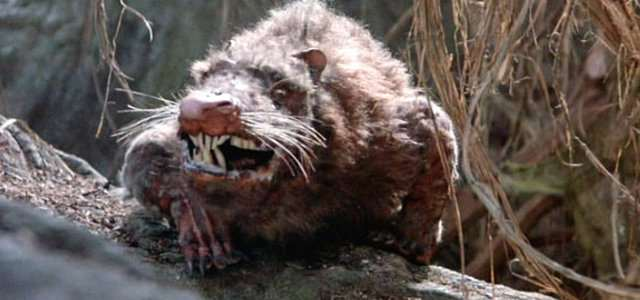
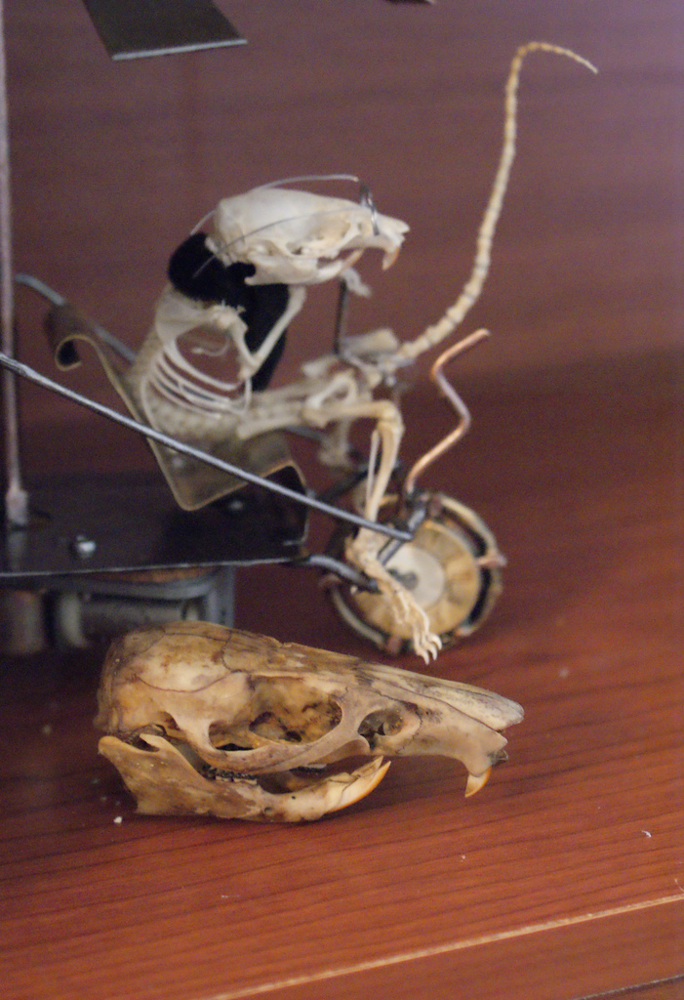

Regarding Asian Ancestry

Asian Ancestors in 100,000 B.C.
The History of Asians is quite fascinating. It all began in 243,000 B.C, when mankind was just coming out of their caves. Many Historians and Archaelogiolists believe that we are descendants of monkeys, and while that is true for some, asians were of rat descent. The earliest known asian was named Skrolk, and was believed to live around 238,200 B.C. Asians lived a simple life foraging for food until around 130,000 B.C., where they began making an intricate farming system called, "rice fields". Within the year 80,000 B.C., Asian-kind had expanded to most of what we now know today as China and Korea. In 60,000 B.C., after the great rice famine, many asians swam their way across the ocean towards the island known as Japan. Asian society expanded for the next 55,000 years and gradually evolved into the humans we see today.

Skeleton of Skrolk on a primitive bicycle used for hunting.
Today, asians are much less rat-like and have adapted to their surroundings, spreading across the world. Historians such as Rick Harrison from the Pawn Shop have looked into several modern asians today see the evolution of the rat people. One such modern asian historians have observed is a boy named Thomas Ku.
Thomas Ku (age 16) in his Home. Notice the fine differences between him and Skrolk.
| Agility |
Strength |
Intelligence |
Luck |
Endurance |
Coordination |
Charisma |
| 7 |
3 |
-10 |
-100 |
1 |
5 |
2 |
The Statistics of Thomas Ku (Modern Day Asian)
| Agility |
Strength |
Intelligence |
Luck |
Endurance |
Coordination |
Charisma |
| 10 |
7 |
5 |
3 |
10 |
-8 |
-1 |
The Statistics of Skrolk (Early Asian)
 Thomas Ku in his younger years preparing his arms to play a game.
Thomas Ku in his younger years preparing his arms to play a game.
Historians and Scientists have been studying his living style for 3 years now. Currently in his Junior year of High School at Damien High School, he is an avid strategy video game player, and plays the piano. Historians hypothesize that the reason so many asians play Piano is from an episode of Tom and Jerry where Jerry (a mouse/rat) began playing piano. His pack consists of his Father, Mother, two sisters and brother, all of whom are older than him. Unlike other asians of his kind, he is very interested in becoming a programmer or an engineer, unlike the generic doctor. Another odd social phenomenon is that he has no television show he has as a favorite (though he has been threatened on more than one occassion at gunpoint to watch Rick and Morty). He also spends a large amount of time on his favorite website, the Bureau of Communication, where he can generate social interaction with others.